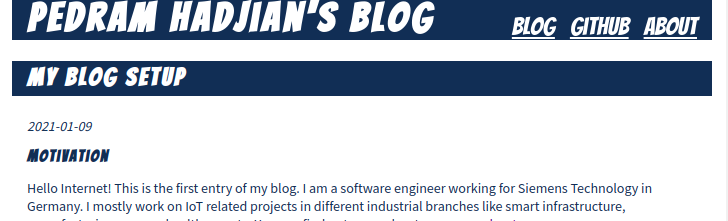

Hello Internet! This is the first entry of my blog. I
am a software engineer working for Siemens Technology
in Germany. I mostly work on IoT related projects in
different industrial branches like smart
infrastructure, manufacturing, energy, healthcare
etc. You can find out more about me on my
about page.
I mostly do backend stuff with golang in my
professional life and feel comfortable automating
stuff with Linux. Nowadays it's almost impossible to
evade web technology, as most desktop applications
have disappeared.
While the upper layers like JavaScript frameworks make
me run away, there is still a lot of interesting tech
involved, which I'd like to learn about. A great
colleague and web-wizard pointed me to
Mozilla Web Docs,
which struck me as one of the most beautifully written
piece of technical documentation ever conceived.
As nobody has ever learned anything, without getting
their hands dirty, I decided to hand-write HTML / CSS
for this blog, to see how far this approach can take
me (probably not that far, as the plethora of static
site generators, CSS frameworks and worry-free hosting
providers don't exist for nothing).
Domain and Web Server
I reserved www.hadjian.com and www.hadjian.de ages ago
from a German hosting provider and never cared to put
something up. I was able to SSH into the server and
checked the settings of sshd_config. To
my surprise, all users including root were
allowed to login via password! Can you spell
d-i-c-t-i-o-n-a-r-y a-t-t-a-c-k?
Since this is the internet we're talking about, I
checked the frequency of login attempts by hackers or
script kiddies (see output below, snipped for sanity).
hadjian@hadjian.com:~$ sudo lastb
-- snip --
root ssh:notty 222.187.224.30 Fri Jan 1 04:23 - 04:23 (00:00)
root ssh:notty 222.187.224.30 Fri Jan 1 04:23 - 04:23 (00:00)
ubuntu ssh:notty 196.27.127.61 Fri Jan 1 04:22 - 04:22 (00:00)
gary ssh:notty 175.123.253.79 Fri Jan 1 04:22 - 04:22 (00:00)
ubuntu ssh:notty 196.27.127.61 Fri Jan 1 04:22 - 04:22 (00:00)
gary ssh:notty 175.123.253.79 Fri Jan 1 04:22 - 04:22 (00:00)
root ssh:notty 135.ip-51-83-128 Fri Jan 1 04:22 - 04:22 (00:00)
redmine ssh:notty 101.33.123.210 Fri Jan 1 04:22 - 04:22 (00:00)
redmine ssh:notty 101.33.123.210 Fri Jan 1 04:22 - 04:22 (00:00)
indra ssh:notty vps-8ee9d389.vps Fri Jan 1 04:21 - 04:21 (00:00)
indra ssh:notty vps-8ee9d389.vps Fri Jan 1 04:21 - 04:21 (00:00)
oracle ssh:notty 196.27.127.61 Fri Jan 1 04:21 - 04:21 (00:00)
oracle ssh:notty 196.27.127.61 Fri Jan 1 04:21 - 04:21 (00:00)
cmsadmin ssh:notty 122.155.174.36 Fri Jan 1 04:21 - 04:21 (00:00)
cmsadmin ssh:notty 122.155.174.36 Fri Jan 1 04:21 - 04:21 (00:00)
tmp ssh:notty 49.235.104.204 Fri Jan 1 04:20 - 04:20 (00:00)
tmp ssh:notty 49.235.104.204 Fri Jan 1 04:20 - 04:20 (00:00)
bot ssh:notty 196.27.127.61 Fri Jan 1 04:20 - 04:20 (00:00)
-- snip --
Who is gary and why was he trying to break into
my server? Luckily lastb shows
failed attempts. When I ran last it only
showed my own logins, although a good hacker would
have wiped that probably. So roughly 5-6 attempts per
minute. Hmmm...
After updating all the packages, I modified /etc/ssh/sshd_conf to
dissallow root login,
only allow a specific group to login and
only allow key-based login / disabling password login
Before that, I added my user to the login group,
created an SSH key with ssh-keygen on my
local machine and copied over the public key to
~/.ssh/authorized_keys. Then I restarted
sshd. Now I should be the only one being
able to login.
Next, I checked running processes:
hadjian@s18186989:~$ sudo ps ax
PID TTY STAT TIME COMMAND
1 ? Ss 3:34 init
2 ? S 0:00 [kthreadd/800044]
3 ? S 0:00 [khelper/8000447]
311 ? Ssl 12:03 rsyslogd
316 ? Ss 0:00 dbus-daemon --system --fork
323 ? Ss 0:00 /lib/systemd/systemd-logind
508 ? Ss 0:00 /usr/sbin/xinetd -dontfork -pidfile /var/run/xinetd.pid -stayalive -inetd_com
522 ? Ss 0:14 cron
746 ? Ss 0:00 /usr/sbin/saslauthd -a pam -c -m /var/run/saslauthd -n 2
748 ? S 0:00 /usr/sbin/saslauthd -a pam -c -m /var/run/saslauthd -n 2
777 tty1 Ss+ 0:00 /sbin/getty 38400 console
780 tty2 Ss+ 0:00 /sbin/getty 38400 tty2
5028 ? Ss 0:00 /usr/sbin/sshd -D
5244 ? Ss 0:00 nginx: master process /usr/sbin/nginx
5245 ? S 0:18 nginx: worker process
5246 ? S 0:18 nginx: worker process
5247 ? S 0:18 nginx: worker process
5248 ? S 0:00 nginx: worker process
5953 ? Ss 0:00 sshd: hadjian [priv]
5964 ? S 0:00 sshd: hadjian@pts/1
5965 pts/1 Ss+ 0:00 -bash
6010 ? Ss 0:00 sshd: hadjian [priv]
6021 ? S 0:00 sshd: hadjian@pts/3
6022 pts/3 Ss+ 0:00 -bash
6044 ? Ss 0:00 sshd: hadjian [priv]
6055 ? S 0:00 sshd: hadjian@pts/4
6056 pts/4 Ss 0:00 -bash
6620 pts/4 S+ 0:00 sudo ps ax
6621 pts/4 R+ 0:00 ps ax
20253 ? S 0:00 upstart-file-bridge --daemon
20257 ? S 0:00 upstart-socket-bridge --daemon
28952 ? S 0:00 upstart-udev-bridge --daemon
28955 ? Ss 0:00 /lib/systemd/systemd-udevd --daemon
29575 ? Ssl 0:00 /usr/sbin/named -u bind
Nothing worrying to my understanding, excpet maybe the
xinted and saslauthd daemons.
Why is that installed? xinetd is a
super-server, which invokes others, in case their port
is connected to. Trying to deinstall it should list
dependent packages and tell me, if there is something
I might need. It didn't list anything dependent, so I
deleted it.
saslauthd had some dependencies however,
which don't seem necessary for my purposes:
I was not going to use my webserver as a mailserver
and all of those packages have to do with mail. Also I
was going to use nginx instead of apache, so all of
that could go away, if it was installed. Now I have a
list of running processes, I am familiar with and
which are required for webserver operations.
SSH, nginx and named have ports open, which seems
ok. With the minimum of proccesses running, a minimum
of ports open and a secure way to login, I think I can
proceed to actually putting content on the site.
Hand-Crafted HTML/CSS
Nowadays it probably doesn't make sense to run your
own server and hand-write HTML / CSS. We have medium,
worpress and similar things and even going one level
below the convenience layer, you'd probably use
bootstrap and deploy to github pages, Heroku or AWS
S3.
I wanted to write at least one web-site the most
ancient way available, to see how much the browser can
do nowadays. So let's get started.
The Blogs that I frequently read are more informative
and less design-focused. I wanted to follow that
strategy and compared some of my frequents:
Looks simple: a header with the name of the website, a
small navbar with links to "blog", "github" and
"about". The main area will contain list of articles
previews, to get straight to the point.
So let's make a plan:
Site Structure
A landing page with a list of articles and
links to an "about"-page and my github
page. The landing page will display a list of
all articles. I will cheat and put my CV as
pdf behind the "about"-link. It is written in
LaTeX and I don't want to recreate it in HTML.
Page Structure
HTML5 introduced semantic tags, which are
quite well defined if you write a
text-document. So it was straigh-forward to
use them in the creation of a blog.
For the landing page, the header
contains the title and
navbar, while the main
area contains merely a list of article
elements like in the below figure.
Simple ASCII art of the planned page
structure. From top to bottom there
will be a header box, a main box and a
footer box. Inside main, each article
preview will be surrounded by semantic
article tags.
An actual blog entry will have the same
structure, but only one article element.
Styling
CSS has become a joy to work with. I remember
my first experiments a couple of years ago,
where centering was hard! Now it is
margin: 0 auto;
I wanted to display the title and the navbar
in one line, if there is enough space (see
responsiveness below). This was also easily done using
display: flex, aligning the links
to the right with justify-content: flex-end;
and exanding the title to take up the rest of
the space, so the text can be left-aligned,
while pushing the links to the right. This is
done with flex: 1 auto;. The result:

Responsiveness
Normal Flow will
already give me responsiveness for normal
text. Also the header will behave nicely, when
the browser is resized. However, if there is
not enough space for all of the text, the
title text will wrap with the following result:
This happens if either the font-size is
increased or the screen has not enough
horizontal width. There is an easy built-in
mitigation, by using flex-wrap: wrap
on the navbar, which will allow the links to
wrap to the next line.
I will only add a tiny media query to center
the title and navbar horizontally, once they
display on two separate lines.
The clever thing I learned from MDN is to make
the query dependent on the number of charaters
with 39em, as centering will also
happen if the text is zoomed and not only if
the page width falls below a certain number of
pixels. Final result:
Wrapping Up
As a beginner I wrote the CSS without a specific
approach, adding lines as I needed them. After the
site behaved as I wanted it to do, I ran over the CSS
once and deleted/rearranged to make it more
sensible. But that is probably all the love that file
will get. It was a hobby project anyways.
I know that web-technology is quite forgiving, so
I ran my pages through validators to see how much
I got wrong on my first go. It wasn't all that bad:
After fixing those tiny errors, I would quickly
check how large my page size has become. I checked
this on the browser network tab by reloading the
page and as expected it was with 280 KiB quite
tiny, so no need for minifying anything.
Also I tried the worst throttling ("Slow 3G") and
the page loaded in 11.27 seconds. Great!
Final Thoughts
The best thing about this project is, that I
finally have a blog, where I can do write-ups of
the projects I spend a lot of time on.
I did understand lots from following the MDN
tutorials and now at least know what "normal
flow", "block elements" and "inline elements" are
and much much more, so I got my moneys worth of
education out of it.
As always, if you really finish a small project,
it takes multiple the amount of time you'd thought
it would take, so even in private it is important
to scope any project to the bare minimum.